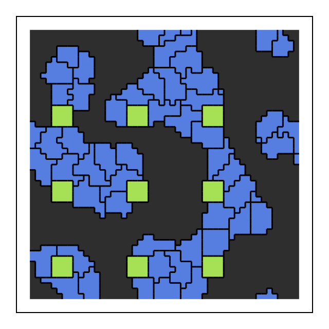

Kinds: @kinds
@kinds lists the cell kinds (cell types) of a model, for example @kinds medium dark light wall[frozen].
- The first kind is the medium: the space around the cells, owner number 0. It has no volume or cell state.
- Inside the model each kind name is its number:
mediumis 0,dark1,light2, … Sokind == darktests a kind, andcells(dark, light)selects kinds. - Kind-indexed tables (
J[kind, kind],V₀[kind]) are indexed in this order, medium first. - In operating points, kinds are given by name (
kind => [:dark, :light]) or number (kind => [1, 2]); saved states store numbers (sol[:kind]).
Frozen kinds
A kind marked [frozen] never moves: its sites never change owner and never copy into neighbours. Use it for walls, obstacles and substrates. The medium cannot be frozen.
using Potts, MakiePotts, CairoMakie
@potts_model Obstacles begin
@kinds medium cell pillar[frozen]
@parameters J[kind, kind] = [0 12 20; 12 6 20; 20 20 0]
@lattice Lattice((50, 50); boundary = Periodic(), neighborhood = Moore(1))
@energy begin
Volume(cell; target = 25.0, strength = 1.0)
Adhesion(J)
end
@sweep Metropolis(; temperature = 10.0)
end
@named obstacles = Obstacles()
op = layout(overlay(Tiling((5, 5); spacing = 2, kinds = [:cell]),
Tiling((4, 4); spacing = 10, region = (5:46, 5:46), kinds = [:pillar])), obstacles)
sol = solve(PottsProblem(obstacles, op, (0, 100); seed = 1), SequentialCPM())
fig = Figure(size = (320, 320))
ax = Axis(fig[1, 1]; aspect = DataAspect())
hidedecorations!(ax)
pottsplot!(ax, renderframe(sol); boundaries = true)
fig
renderframe(sol) draws the last state with frozen sites as obstacles. Whether a site is frozen follows its owner's kind: a cell whose kind changes to a frozen kind (by a callback, say) stops moving from the next MCS.